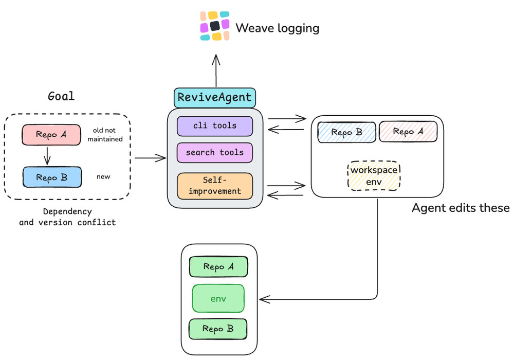
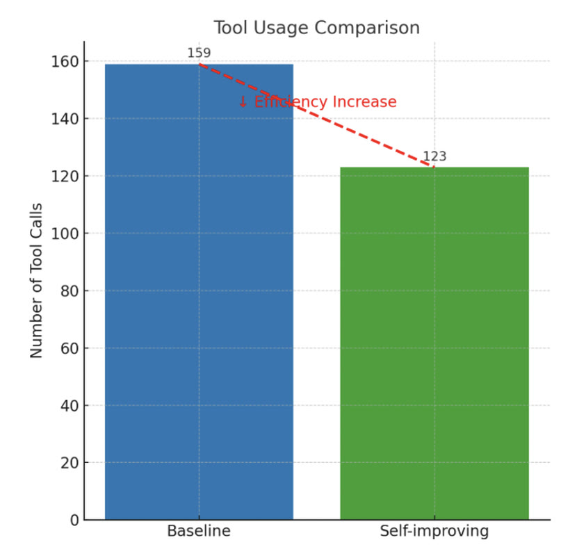

Why dead repositories stay dead

The reference implementation you want to build on is four years old and its dependencies no longer resolve against anything current. Reproducing the original result turns into archaeology, which is one of the most common reasons a good idea never gets built on. It is also a poor fit for a one-shot code model: whether a fix worked is not visible in the diff, only in whether the thing runs, and the failures arrive one import error at a time.
An agent that reconciles two codebases

- An agent that takes an unmaintained repository and a current base repository and reconciles the two, resolving the dependency and version conflicts between them. It works in a scratch workspace with cli and search tools, editing both checkouts and the environment until the combined thing runs.
- A self-improvement loop that spans runs, not just steps within one. The agent keeps a mistake log from its own attempts and distills it into a ranked playbook for the next run: diff the dependencies before installing rather than discovering conflicts at runtime, batch a symbol rename into one pass instead of editing file by file, audit for the NumPy 2.x migration up front whenever NumPy 2 is present in the environment.
- Instrumented end to end with W&B Weave, so every tool call is logged and the before-and-after is measured rather than asserted.
- Demonstrated by integrating racecar_gym, roughly four years stale, against the current Farama Gymnasium API.
Rewriting its own playbook from the previous run's mistakes cut the same integration task from 159 tool calls to 123, a 23% reduction, bringing a four-year-stale racecar_gym up against the current Gymnasium API. It won Best Self-Improving Agent among 67 teams at Weavehacks 2, run by Weights & Biases and Google Cloud during SF Hack Week.
Why the loop could score itself
- Bit rot comes with a free reward function. The code either imports and executes or it does not, so the agent can score its own attempts without a human in the loop, which is exactly the condition a self-improving loop needs.
- The self-improvement is legible. What the loop produces is not a better set of weights but a written playbook you can read, disagree with and reuse. That is also why the improvement could be counted in tool calls at all.
- Scoping to reconciling two repositories rather than general repair. The target behavior already exists and is described in both codebases, so the agent has a specification to work toward instead of having to infer intent.